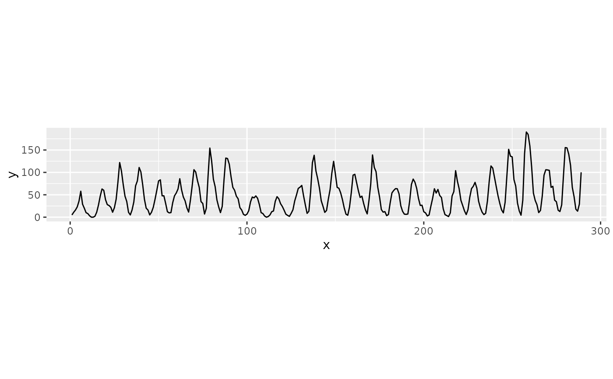

Compute a set of aspect ratios, one per frequency scale present in a
series, using the multi-scale banking algorithm of Heer and Agrawala
(2006). Single-scale banking (bank_slopes) considers the
whole series at once, so it accentuates local features and can obscure
larger-scale trends. Multi-scale banking instead uses spectral analysis to
find the scales that carry real energy, low-pass filters the data to each
of those scales in turn, and banks the resulting trend curve, yielding one
aspect ratio per scale.
Usage
bank_slopes_multiscale(
y,
method = c("ms", "as", "ao", "was"),
cull = TRUE,
window = 3,
sd = 1,
threshold = NULL,
scale_factor = 1.25
)Arguments
- y
numericseries of evenly spaced observations.- method, cull
Passed to
bank_slopes. The defaults are those Heer and Agrawala used for all results reported in their Section 3.2: median absolute slope banking with slopeless line culling.- window
integerwidth, in frequency bins, of the Gaussian kernel used to smooth the power spectrum.- sd
numericstandard deviation of that Gaussian kernel.- threshold
numericpower above which a frequency bin counts as a scale of interest. Defaults to the mean of the smoothed power spectrum. Raise it to select fewer scales.- scale_factor
numericminimum ratio between successive retained aspect ratios.
Value
A tibble with one row per retained scale, in
ascending order of frequency, and columns:
frequencyintegerfrequency index, i.e. the number of times the trend repeats across the series.rationumericaspect ratio in they / xsense used bycoord_fixed().aspect_rationumericthe same value as width / height, the convention in which the banking literature reports aspect ratios.
Details
The procedure is Algorithm 1 of Heer and Agrawala (2006):
Take the discrete Fourier transform of
yand form the power spectrum from the squared coefficient magnitudes.Smooth the spectrum by convolving it with a Gaussian kernel, since spectral energy tends to arrive in "clumps" containing local oscillation.
Threshold the smoothed spectrum. Contiguous runs above the threshold are collapsed to their highest-frequency bin, capturing the total contribution of that region of energy.
For each retained scale, low-pass filter
yto remove all higher frequencies and bank the resulting trend curve to 45 degrees usingbank_slopes.Discard aspect ratios within
scale_factorof the previous retained ratio, since they would produce visually redundant charts.
The scale corresponding to the data in its entirety is always included.
Because the algorithm is defined on the frequency domain of y alone,
it assumes observations are evenly spaced in x; the banking of each
trend curve uses x = seq_along(y).
References
Heer, Jeffrey and Maneesh Agrawala, 2006. "Multi-Scale Banking to 45." IEEE Transactions On Visualization And Computer Graphics 12(5).
Cleveland, W. S. 1993. "A Model for Studying Display Methods of Statistical Graphs." Journal of Computational and Statistical Graphics.
See also
bank_slopes for single-scale banking, and
bank_plot_multiscale to bank a ggplot at every scale.
Examples
library("ggplot2")
# Sunspot activity, the classic example from Cleveland and from Heer and
# Agrawala's Section 3.2.1. Spectral analysis identifies scales at frequency
# indices 7, 10, 31 and 36, plus the data in its entirety; culling similar
# aspect ratios leaves two charts worth drawing.
y <- as.numeric(sunspot.year)
bank_slopes_multiscale(y)
#> # A tibble: 2 × 3
#> frequency ratio aspect_ratio
#> <int> <dbl> <dbl>
#> 1 7 0.253 3.95
#> 2 31 0.0462 21.7
# `ratio` is ready for coord_fixed(); `aspect_ratio` is the same value as
# width / height, the convention used in the banking literature.
scales <- bank_slopes_multiscale(y)
m <- ggplot(data.frame(x = seq_along(y), y = y), aes(x = x, y = y)) +
geom_line()
## The low-frequency trend: the oscillation of high points across cycles
m + coord_fixed(ratio = scales$ratio[[1]])

## The 11-year cycle: a steep onset followed by a more gradual decay
m + coord_fixed(ratio = scales$ratio[[2]])
 ## Raise the threshold to select fewer scales
bank_slopes_multiscale(y, threshold = Inf)
#> # A tibble: 1 × 3
#> frequency ratio aspect_ratio
#> <int> <dbl> <dbl>
#> 1 144 0.0455 22.0
## Any of the single-scale banking methods can be used for each scale
bank_slopes_multiscale(y, method = "ao")
#> # A tibble: 2 × 3
#> frequency ratio aspect_ratio
#> <int> <dbl> <dbl>
#> 1 7 0.295 3.39
#> 2 31 0.0545 18.4
## Raise the threshold to select fewer scales
bank_slopes_multiscale(y, threshold = Inf)
#> # A tibble: 1 × 3
#> frequency ratio aspect_ratio
#> <int> <dbl> <dbl>
#> 1 144 0.0455 22.0
## Any of the single-scale banking methods can be used for each scale
bank_slopes_multiscale(y, method = "ao")
#> # A tibble: 2 × 3
#> frequency ratio aspect_ratio
#> <int> <dbl> <dbl>
#> 1 7 0.295 3.39
#> 2 31 0.0545 18.4